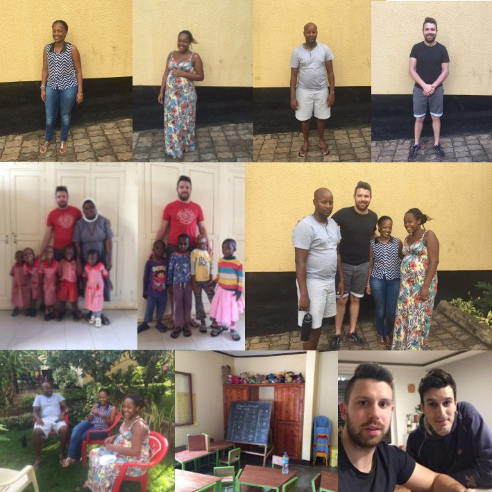

Hlavní činností GL Africa je podpora dětí bez rodinného zázemí a jejich postupné začlenění do života ve společnosti. Sponzorství v GL Africa probíhá formou kontinuálního financování. Našim cílem je poskytnout dětem středoškloské vzdělání s možností pokračovat na vysokou školu. Po studiu bude dětem nabídnuta pracovní pozice od lokálních partnerů GL Africa v oblasti zemědělství, zdravotnictví a IT. To znamená, že pomůžeme vychovat samostatné jedince, který půjde příkladem dalším lidem.
Sirotčinec s kapacitou 60 dětí se stará o děti ve věku 0 - 6 let. Externě zde působí dobrovolnice z Rakouska a Německa. Upendo jsme si vybrali z důvodu velmi dobré organizace, čistoty a dlouhodobé práce s dětmi.
Kvalitní základní škola s rozšířenou výukou angličtiny a částí personálu z Evropy. Jedním z hlavních problémů školství v Tanzanii jsou nedostatečná kvalita na straně učitelů a nedodržování školního plánu. Z těchto důvodů jsme vybrali školu, u které víme, že bude naše děti svědomitě vzdělávat podle evropských standardů.
Hledáme sponzory pro děti vybrané sirotčincem Upendo. Těmto dětem se umožní pomocí sponzorského daru studovat na základní škole Little Acorns School. Po ukončení základní školy bude dítě pokračovat ve studiu na střední škole, výše sponzorského příspěvku však zůstane stejná jako u základní školy. Roční příspěvek tvoří 25 000 CZK nebo 1 000 USD. Tato částka zahrnuje roční školné, uniformu, svačiny, obědy, učebnice, sešity, volnočasové aktivity a každodenní transport dětí ze sirotčince do školy a zpět.
Náš tým tvoří Ondřej Jirásek, Jakub Malý, Thomas Munuo, Irene Munuo, Vivian Ngowi a George Nyagabona.
Výhody sponzorského programu u GL Africa bodovitě - dlouhodobá podpora dětí za cílem výchovy samostatného jedince, nabídnutí pracovní pozice dítěti po studiu, investice do vzdělání, transparentní účet, report o stavu dítěte 3x ročně, možnost dítě navštívit na místě osobně, kontrola nad vynaloženými náklady.
GL Africa Organization z.s.
Doležalova 1883/13
616 00 Brno
info@glafrica.cz